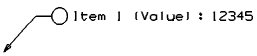

使用用户定义的 PMI 命令来在您的模型中创建定制的 PMI 对象实例。

用户定义的 PMI 对象可以是文本或者包含符号，您可要通过在 DFA 文件中定义来创建定制的 PMI 对象，一旦在 DFA 文件中定义，则可以在用户定义对话框中使用。
|
注意 |
不要重新放置或编辑系统 DFA 文件，而应该将系统 DFA 文件复制为模板，然后新建用户定义的 DFA 文件。将 DFA 文件复制到想要的位置并编辑副本。保存新的 DFA 文件时，不要使用 nx 前缀，因为这是为系统生成的类保留的。您也可以为 DFA 文件定义搜索目录，参见知识融合在线文档以获取更多信息。 |
|
先决条件 |
知识融合首选项→搜索目录必须指向至少包含一个 PMI DFA 文件的目录 |
|
工具条 |
PMI→PMI 专用下拉菜单→用户定义的 PMI |
|
菜单 |
产品制造信息→专用→用户定义 |